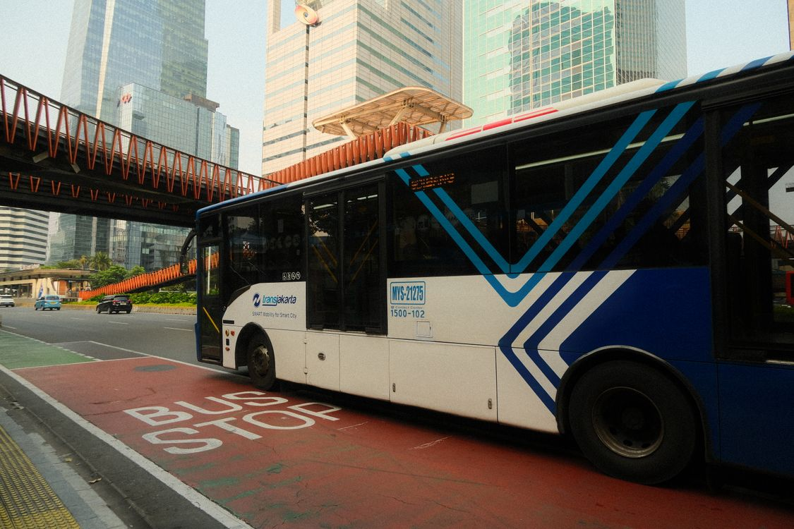
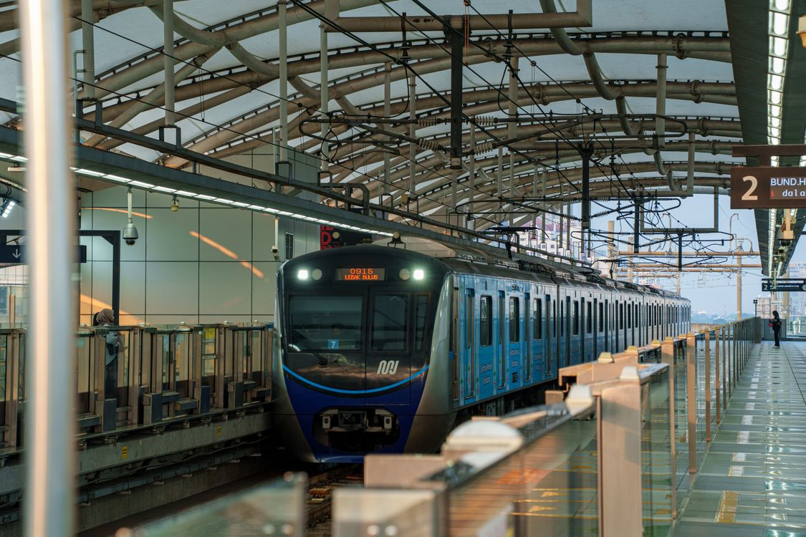

Kalau kamu sedang mencari kerja di Jakarta, simpan kabar ini. Mulai 1 Januari 2027, pencari kerja gratis naik TransJakarta, MRT Jakarta, dan LRT Jakarta. Kebijakan ini diumumkan Gubernur DKI Jakarta Pramono Anung pada 22 Oktober 2026, dan pencari kerja menjadi salah satu dari enam golongan baru penerima Kartu Layanan Gratis.
Artikel ini merangkum isinya berdasarkan keterangan resmi Pemprov DKI: siapa yang berhak, moda apa saja yang gratis, dan mekanisme yang sudah diketahui per Oktober 2026. Catatan jujurnya di awal: pendaftaran kartunya belum dibuka, karena aturan teknisnya masih disiapkan.
Apa yang berubah mulai 1 Januari 2027
Pemprov DKI memperluas penerima layanan transportasi umum gratis dari 15 golongan menjadi 21 golongan. Tiga moda yang digratiskan: TransJakarta, MRT Jakarta, dan LRT Jakarta, dan perluasan ini berlaku serentak mulai 1 Januari 2027.
Perluasan ini berjalan bersamaan dengan rencana penyesuaian tarif transportasi umum. Menurut keterangan Pramono, subsidi bagi golongan yang dianggap mampu akan dikurangi, lalu anggarannya dialihkan ke kelompok yang lebih membutuhkan, termasuk enam golongan baru ini.

Enam golongan baru penerima kartu gratis
Selain pencari kerja, ada lima golongan lain yang ikut masuk daftar Kartu Layanan Gratis mulai 2027:
- Pendamping penyandang disabilitas. Selama ini penyandang disabilitas sudah gratis naik, tapi pendampingnya masih bayar. Mulai 2027, pendamping ikut gratis.
- Pencari kerja. Warga Jakarta yang sedang mencari pekerjaan, dengan menunjukkan bukti atau keterangan status pencari kerja.
- Pasien rujukan rutin. Pasien yang bolak-balik ke rumah sakit atau puskesmas dan memiliki keterbatasan ekonomi.
- Pelajar dan mahasiswa tidak mampu di luar penerima KJP Plus dan KJMU. Syarat rincinya akan diatur dalam Peraturan Gubernur.
- Pelaku UMKM binaan Pemprov DKI Jakarta.
- Korban bencana alam yang masih dalam masa pemulihan.

Bagaimana pencari kerja bisa dapat kartunya
Untuk golongan pencari kerja, Pemprov menyiapkan kartu khusus yang nantinya menjadi bukti untuk naik tanpa bayar. Pramono menyebut akan ada loket di beberapa tempat tempat pencari kerja bisa menunjukkan bukti sedang mencari kerja.
Yang diprioritaskan adalah pencari kerja yang belum pernah bekerja. Kalau kamu sudah punya pekerjaan lalu ingin pindah ke pekerjaan lain, kamu bukan prioritas penerima fasilitas ini. Menariknya, pembebasan ini direncanakan tidak terbatas untuk pemegang KTP Jakarta saja: pendatang dari luar daerah yang mencoba peruntungan mencari pekerjaan di Jakarta juga direncanakan bisa merasakan manfaatnya.
Pengumuman ini disampaikan Pramono saat peresmian Karir Jakarta dan Tenaga Kerja Mandiri Expo 2026 di SMESCO, Jakarta Selatan, pada 22 Oktober 2026, sebuah pameran yang mempertemukan pencari kerja dengan perusahaan. Jadi kebijakannya diumumkan tepat di depan audiens yang paling berkepentingan: orang-orang yang sedang berburu pekerjaan.
Yang belum bisa dijawab sekarang
Karena aturan teknisnya masih disusun, beberapa hal belum ada jawabannya: kapan loket pendaftaran dibuka, dokumen apa yang diterima sebagai bukti pencari kerja, berapa lama kartu berlaku, dan apakah ada kuota. Jadi kalau kamu membaca artikel ini dan langsung mencari cara daftarnya, jawabannya belum ada, dan siapa pun yang sudah menawarkan "pendaftaran kartu gratis TransJakarta" sebelum pengumuman resmi patut dicurigai.
Patokan waktunya: per Oktober 2026, keputusannya sudah diambil dan berlaku 1 Januari 2027. Pantau kanal resmi Pemprov DKI menjelang akhir tahun supaya tidak kelewatan saat pendaftarannya dibuka.
Intinya
Mulai 1 Januari 2027, daftar penerima transportasi umum gratis di Jakarta bertambah dari 15 menjadi 21 golongan, dan pencari kerja salah satunya. Modanya TransJakarta, MRT, dan LRT. Yang belum pernah bekerja menjadi prioritas, kartunya disiapkan khusus, dan aturan main lengkapnya menyusul lewat Peraturan Gubernur. Kalau kamu memang sedang melamar pekerjaan, kabar ini layak disimpan.
← Kembali ke Other